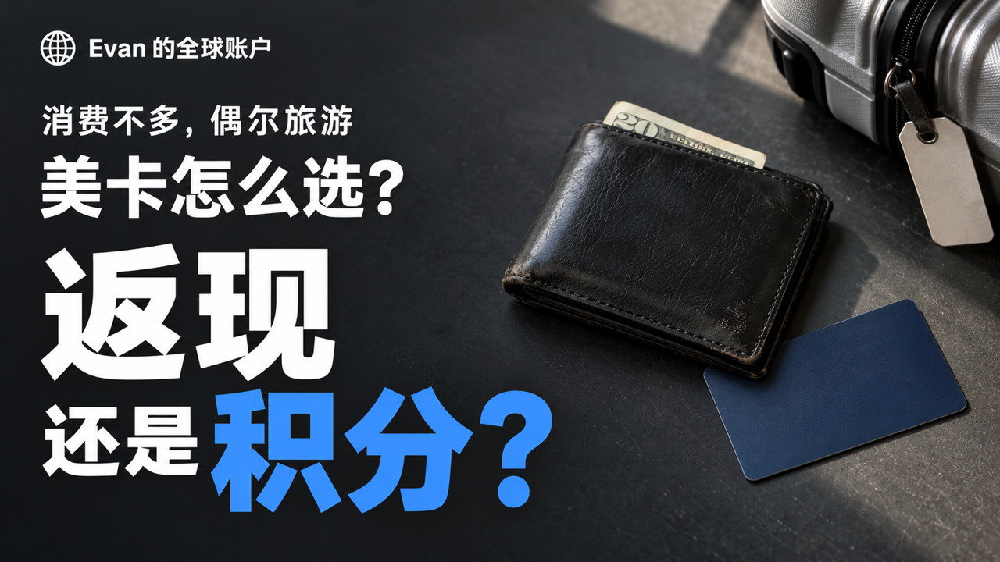

看别人免费住酒店，我要不要也攒积分？
看别人用积分免费住酒店，真的很容易心动。一晚几百美元的酒店，最后自己几乎不用掏钱，看着就很爽。我之前也说过，我下一张卡可能会考虑希尔顿联名卡。
但我后来就在想一个问题：我平时又没有那么多消费，也不是天天出去旅游。那这些积分到了我手里，我真的能用掉吗？还是说，我直接拿返现，其实更省事？
如果你跟我一样，平时就是正常消费，一年也就出去玩一两次，那今天这个视频应该挺适合你。我现在的想法很简单：你还不知道积分要拿来干嘛，那返现大概率更适合你。
但如果你已经知道自己想去哪、想住哪家酒店，甚至都查过要多少积分，那这个时候再考虑积分卡，会更合理一点。所以今天我们就从最基础的开始聊：返现和积分，到底有什么区别？你刷完卡以后，手里拿到的到底是什么？
返现：刷完卡，拿到一笔钱
返现其实最好理解。比如一张卡是 1.5% 返现，你刷了 1000 美元，那最后拿到的奖励就是 15 美元。像 Capital One 的 Quicksilver，基本就是这种思路。我这里说的是免年费的 Quicksilver，不是 QuicksilverOne 那张。
不过返现也不是说，你每刷一笔钱，银行马上就给你打 1.5% 到银行卡里。一般都是先在信用卡账户里慢慢累积。比如你现在攒了 30 美元返现，就可以按照银行提供的方式去兑换。最简单的就是直接拿去抵账单。
比如你这个月账单 500 美元，用 30 美元返现抵掉，那剩下的 470 美元正常还就行。所以我觉得返现最大的优点就是——简单。我刷了多少钱，大概能拿回来多少，一眼就能算出来。
而且你不用为了把奖励用掉，专门去安排一次旅行。今年不出去玩，没关系。出去玩不住希尔顿、不住万豪，跑去住民宿，也没关系。
之前拿到的返现，还是你的钱。但这里也有一个很容易想歪的地方。返现不是让你靠刷卡赚钱。
你刷 1000 美元，1.5% 也就 15 美元。你要是为了这 15 美元，多买了一个本来根本不需要的东西，那其实反而亏得更多。所以返现的逻辑一直都是：
本来就要花的钱，顺便拿一点回来。而不是为了拿返现，去多花钱。那积分就有点不一样了。
因为积分最麻烦、但也最有意思的地方，就是它没有一个固定的价值。
积分：先攒起来，再拿去换东西
积分卡就不一样了。它给你的，通常不是一笔可以直接花的钱，而是一堆积分。比如最基础、免年费的 Hilton Honors American Express Card。
普通合格消费，每花 1 美元，可以拿 3 点希尔顿积分。也就是说，你刷 1000 美元，大概就是 3000 点。但这里有个地方特别容易搞混。
3 点积分，不等于 3 美元，也不等于 3% 返现。它只是告诉你：你这笔消费，攒了多少希尔顿积分。
那这些积分能干嘛？最常见的就是拿去换希尔顿旗下酒店。你想住哪家酒店，直接去查你要住的日期，系统会告诉你：
这一晚如果用积分订，要多少点。比如你看中的这家酒店，一晚要 3 万点。但你手里现在只有 3000 点。
那很明显，还不够换一整晚。你要么继续攒，要么看看有没有 积分加现金 这种方式。所以这里你就能看出来，积分和返现最大的区别是什么。
15 美元返现，你一眼就知道值多少。但 3000 点积分到底值多少，不一定。还得看你准备拿它换什么。
换哪家酒店、住哪一天、那天需要多少积分，这些都会影响你最后到底值不值。还有一个地方，我觉得我们人在国内特别容易看错。比如有些卡写着：
餐饮 5 倍、超市 5 倍。你不能看到以后，就默认自己在中国吃饭、逛超市，也能全部拿 5 倍。很多这种奖励类别，写的是美国境内的消费。
所以我这里用 3 点 来举例，是因为这是普通合格消费，比较好理解。至于其他银行积分、航空里程，它们又有自己不同的玩法。今天我们先不把所有东西混在一起。
就先拿希尔顿积分这个例子，把“积分到底是什么”讲清楚。
同样消费 $1,000，奖励单位不同
- 1.5% 返现
- $1,000 × 1.5% = $15按发卡行支持的方式兑换，不需要先找到合适的酒店。
- 3 点 / 美元
- $1,000 × 3 = 3,000 点这里指希尔顿普通合格消费积分，需查看具体日期和酒店的兑换需求。
一年只出去一两次，积分能不能用上？
我觉得这个问题，不能只看你一年出去几次。还得看你出去的时候，准备怎么住。比如你已经决定要去吉隆坡，日期也定好了，而且你本来就想住一家希尔顿。
那这个时候就很好判断。直接去查同一天：现金订多少钱？
积分订要多少点？然后把房型、取消政策这些也对一下。别一个拿“不能退”的便宜房价，去跟一个“可以免费取消”的积分房比，这样其实不太公平。
如果最后你发现：这家酒店本来就想住，积分房也有，手里的积分也刚好够。那就很简单。
本来要掏的钱，现在不用掏了。哪怕你一年只出去玩一次，只要这一次真的用上了，那这些积分对你来说就有价值。但如果你订酒店一直都是：
哪家位置好住哪家，哪家便宜住哪家。有时候住民宿，有时候住当地小酒店，根本不太在意是不是希尔顿。那希尔顿积分就不一定每次都适合你。
甚至有可能你积分已经攒了一堆，结果真要出门的时候，那个地方没有你想住的希尔顿，或者那几天积分房不合适。最后还是得自己掏钱订别的酒店。所以我不会因为：
“我一年也会出去旅游一两次。”就直接觉得自己应该办积分卡。我更想先知道：
这些积分，到时候能不能用在我真的想住的酒店上。还有一种情况大家应该经常看到。有人用积分换了一家一晚几百美元的酒店，然后说：
“这一晚我省了几百美元。”这个要分情况。如果你本来就准备花几百美元住这家酒店，那当然是真的省下来了。
但如果你原本只准备花 100 美元住一家普通酒店，后来因为有积分，去住了一家 500 美元的酒店。那我觉得更准确的说法是：你的住宿体验升级了。
这个当然也很好。只是不能把那 500 美元全部都算成：“我本来会花的钱。”
因为你原本可能根本不会订它。但有些人玩积分，本来追求的就是这个。平时舍不得住的酒店，用积分去体验一下。
如果你喜欢这种玩法，也愿意提前查酒店、看积分房、安排时间，那积分确实会更有意思。但像我这种，如果假期本来就不多，目的地和时间都已经定好了。那我更希望的是：
到了那里，有合适的酒店就直接订。而不是为了把积分用掉，再反过来改自己的行程。所以一年只出去一两次，不代表积分一定没用。
真正要看的还是：你的旅行，是围着积分走，还是积分刚好能配合你的旅行。
先看旅行，再决定积分有没有用
- 目的地和日期先确定自己本来就准备去哪里、什么时候去。
- 酒店是否合适位置、房型、取消政策和积分房供应都要匹配。
- 同条件比较对照含税费现金总价、所需积分和额外现金支出。
- 区分两种价值替代原定支出是省钱；换到更贵的酒店也可能是体验升级。
消费不多，攒积分会不会太慢？
会。而且这个其实是很多人办积分卡之前，最容易忽略的一点。我们就拿一个简单的例子。
假设一年你能在这张卡上刷 6000 美元。这个不是我的真实消费记录，就是拿来方便算。如果放在刚才那张 1.5% 返现卡上：
一年大概就是 90 美元返现。如果放在希尔顿卡上，而且我们都按普通消费 3 倍积分来算：一年大概就是 1.8 万点希尔顿积分。
那假如你想住的那晚，需要 3 万点。你会发现：刷了一年，还是不够换一晚。
这不代表这 1.8 万点没用。只是你得提前想清楚：这些积分攒到手以后，到底有没有适合你的地方能用。
而且千万别因为觉得：“差一点就够了。”然后为了凑积分，开始刻意多花钱。
这个逻辑我觉得一定不能反过来。我们办信用卡，是想把本来就要花的钱，顺便拿一点奖励。不是为了拿奖励，再给自己制造新的消费。
那为什么你经常看到有些人刚办卡没多久，就突然有十几万、甚至更多积分，可以直接拿去住酒店？很多时候是因为有 开卡礼。这个东西其实很重要。
简单来说就是：你新办一张卡以后，在规定时间里刷够一定金额，银行会额外给你一大笔奖励。而且很多时候，这笔开卡礼，比你平时一点一点刷卡攒一年还要多。
所以很多人真正第一次用积分换酒店，靠的不是日常消费。靠的是开卡礼。比如你本来就准备买机票、订酒店、换电脑，刚好这些正常消费能把开卡任务做完。
那这个开卡礼就很有价值。但这里也别只盯着：“送多少积分。”
你还得看三个东西：要在多久之内花多少钱？这个消费你本来会不会有？
积分拿到以后准备怎么用？这三个问题其实比那个奖励数字本身更重要。而且返现卡也会有开卡礼，不是只有积分卡才有。
还有一点也很容易让人误判。第一年你靠开卡礼，一下拿了很多积分。不代表以后每年都能拿这么多。
第二年、第三年，没有这笔大的开卡礼以后，真正决定这张卡值不值得继续用的，还是：你平时能攒多快，以及这些积分你到底用不用得掉。
一年 $6,000 的普通消费，能攒多少？
| 同样的消费 | 1.5% 返现 | 3 点 / 美元 |
|---|---|---|
| $1,000 | $15 | 3,000 点 |
| $6,000 / 年 | $90 / 年 | 18,000 点 / 年 |
要不要交年费？
前面举的那两张卡，都是免年费的。但如果你开始看一些更高级的积分卡，就会发现很多卡每年都要交年费。那我觉得这个时候，不能只看：
“它送了多少权益。”还得看：这些权益，我到底会不会真的用。
比如有些酒店卡，会给你各种酒店优惠。看起来一年加起来能省不少钱。但问题是，有些优惠不是一次给你的。
可能是分季度、分半年，或者有其他使用条件。那如果我一年就出去玩一次，其他时间根本不会住酒店。这时候你就不能把全年所有优惠都算成：
“我一定能省下的钱。”真正有价值的是这种情况：我本来就准备住这家酒店。
现在刚好有这个权益，能让我少付一点。这个我觉得是真省钱。但如果本来没准备住，为了把优惠用掉，专门又订了一晚。
甚至为了用权益，反而换成了一家更贵的酒店。那这个时候，就得重新算一下：最后到底是省钱了，还是为了省钱又多花了一笔。
所以如果你平时消费不高，一年也就出去玩一两次。我个人觉得，真的没必要一上来就冲高年费卡。先从免年费的开始。
等你慢慢知道：哪些权益你真的会用，哪些权益对你来说只是看起来很好。
再决定这笔年费值不值得交。还有一个地方，我觉得我们人在国内办美国信用卡的时候，也特别容易忽略。就是除了年费之外，可能还有一些其他成本。
比如美国手机号、收卡、转运，或者其他为了维护美卡产生的费用。这些钱也得算进去。不能说：
“我今年拿了 100 美元奖励。”然后就忘了自己为了这张卡，前前后后其实也花了不少钱。最后还有一个最重要的。
返现也好，积分也好，本质上都只是刷卡奖励。前提是你每个月都能按时还款。而且最好是全额还清。
一旦开始付信用卡利息，那点返现和积分，很容易一下就被吃掉。所以我觉得顺序一定是：先别付利息，再考虑怎么拿奖励。
不然研究半天 2% 返现、3 倍积分，最后一个月利息全给你拿回去了。
奖励要和真实成本放在一起看
- 真正用得上的奖励
- 返现、适合自己行程的积分兑换，以及本来就会使用的权益。
- 需要扣除的成本
- 年费、利息、为了维护账户产生的实际费用，以及为完成任务额外制造的消费。
- 第二年还要复盘
- 开卡礼通常不是每年的固定收入，要重新看日常奖励与权益是否值得保留这张卡。
那我会怎么选？
如果我现在没有特别想换的酒店，也不想花很多时间去研究积分怎么用。那我大概率还是会选返现。可能最后拿到的钱没有特别夸张，但它简单。
刷多少，大概拿多少。拿到以后，也不用非得等下一次旅行才能用。但我之前确实也想过办希尔顿联名卡。
因为我也想试试看，之后出去玩的时候，能不能真的靠积分住到一些自己本来想住的酒店。所以如果是我，我不会先看：“这张卡能送我多少积分？”
我会先看：“我下一次准备去哪？那里有没有我真的想住的酒店？这些积分到底够不够用？”如果答案都比较合适，那这个时候我再考虑积分卡。
而且我觉得返现和积分，也没必要非得二选一。平时正常消费，用一张返现卡。以后有一趟比较明确的旅行，刚好能用到积分，再考虑积分卡。
我觉得这样反而比较轻松。也不用看到别人用积分换了一晚几百美元的酒店，就觉得：“是不是我没有玩积分，就亏了？”
其实没必要。对我来说，只要这个奖励能帮我少付一笔本来就要花的钱。或者让我住到一家我自己真的很想体验的酒店。
那它就是有用的。至于到底选返现还是积分，没有哪一个一定更高级。适合自己的消费方式，就够了。
我是 Evan。我们下期见。
阅读边界：本文用希尔顿酒店积分举例，不代表所有银行积分、航空里程或兑换方式都一样。开卡礼、资格、奖励类别、年费及条款可能变化；请核对当前官方申请页面。本文不声称我已经持有或兑换了文中示例卡片及酒店。
免责声明：本文仅为个人经验分享和信息整理，不构成金融、税务、法律或投资建议。申请金融产品前，请以官方信息为准并结合自己的消费预算和还款能力判断。客户本人负责核对并提交正式申请，不保证审批、奖励或兑换结果。
官方资料与核对说明
资料核对日期：2026 年 10 月 15 日。以下是普通官方参考链接，不是本文的邀请或联盟链接。
- Capital One 官方卡片比较：核对免年费 Quicksilver 的 1.5% 返现，并区分 QuicksilverOne。
- Quicksilver 官方说明：核对返现兑换与账单抵扣的最低还款限制。
- Hilton Honors American Express Card 官方说明：基础卡无年费，其他合格消费 3 点 / 美元；5 倍餐饮、超市、加油奖励有美国地区限制。
- Hilton Honors 官方 FAQ：核对奖励住宿、积分加现金及当前兑换规则。
前后篇
上一篇：Revolut 美区开户：账户用途、流程与 $100 邀请奖励说明